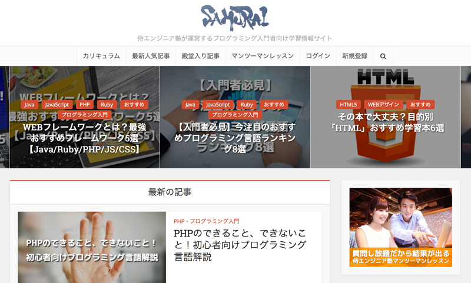
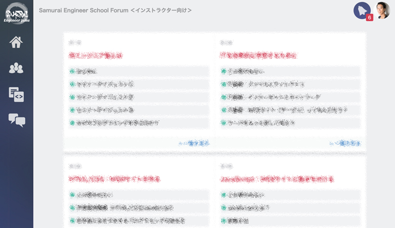
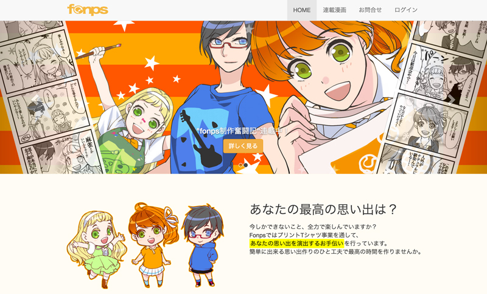

<!DOCTYPE html>
<!--[if lt IE 7]>      <html class="no-js lt-ie9 lt-ie8 lt-ie7"> <![endif]-->
<!--[if IE 7]>         <html class="no-js lt-ie9 lt-ie8"> <![endif]-->
<!--[if IE 8]>         <html class="no-js lt-ie9"> <![endif]-->
<!--[if gt IE 8]><!--> <html class="no-js"> <!--<![endif]-->
    <head>
        <meta charset="utf-8">
        <meta http-equiv="X-UA-Compatible" content="IE=edge">
        <title>Inoue Shinya - Prtfolio Page</title>
        <meta name="robots" content="noindex,nofollow">
        <!--
    	Volton Template
    	http://www.templatemo.com/preview/templatemo_441_volton
        -->
        <meta name="viewport" content="width=device-width, initial-scale=1">

        <link rel="stylesheet" href="css/normalize.css">
        <link rel="stylesheet" href="css/font-awesome.css">
        <link rel="stylesheet" href="css/bootstrap.min.css">
        <link rel="stylesheet" href="css/templatemo-style.css">
        <script src="js/vendor/modernizr-2.6.2.min.js"></script>
    </head>
    <body>
        <!--[if lt IE 7]>
            <p class="browsehappy">You are using an <strong>outdated</strong> browser. Please <a href="http://browsehappy.com/">upgrade your browser</a> to improve your experience.</p>
        <![endif]-->

        <div class="responsive-header visible-xs visible-sm">
            <div class="container">
                <div class="row">
                    <div class="col-md-12">
                        <div class="top-section">
                            <div class="profile-image">
                                
                            </div>
                            <div class="profile-content">
                                <h3 class="profile-title">井上 慎也</h3>
                                <p class="profile-description">WEBプログラマ<br>事業コンサルタント</p>
                            </div>
                        </div>
                    </div>
                </div>
                <a href="#" class="toggle-menu"><i class="fa fa-bars"></i></a>
                <div class="main-navigation responsive-menu">
                    <ul class="navigation">
                        <li><a href="#top"><i class="fa fa-home"></i>Home</a></li>
                        <li><a href="#about"><i class="fa fa-user"></i>About Me</a></li>
                        <li><a href="#skill"><i class="fa fa-code"></i>Technical Skills</a></li>
                        <li><a href="#writting"><i class="fa fa-pencil"></i></i>Writting</a></li>
                        <li><a href="#projects"><i class="fa fa-paperclip"></i>Product</a></li>
                    </ul>
                </div>
            </div>
        </div>

        <!-- SIDEBAR -->
        <div class="sidebar-menu hidden-xs hidden-sm">
            <div class="top-section">
                <div class="profile-image">
                    
                </div>
                <h3 class="profile-title">井上 慎也</h3>
                <p class="profile-description">WEBプログラマ<br>事業コンサルタント</p>
            </div> <!-- top-section -->
            <div class="main-navigation">
                <ul class="navigation">
                    <li><a href="#top"><i class="fa fa-globe"></i>TOP</a></li>
                    <li><a href="#about"><i class="fa fa-user"></i>About Me</a></li>
                    <li><a href="#skill"><i class="fa fa-code"></i>Technical Skills</a></li>
                    <li><a href="#writting"><i class="fa fa-pencil"></i></i>Writting</a></li>
                    <li><a href="#projects"><i class="fa fa-paperclip"></i>Product</a></li>
                </ul>
            </div> <!-- .main-navigation -->
            <div class="social-icons">
                <ul>
                    <li><a href="https://www.facebook.com/iesa200" target="_blank"><i class="fa fa-facebook"></i></a></li>
                    <li><a href="https://twitter.com/InoIno_iesa"><i class="fa fa-twitter"></i></a></li>
                    <li><a href="https://www.instagram.com/shinya.inoue/"><i class="fa fa-instagram"></i></a></li>
                </ul>
            </div> <!-- .social-icons -->
        </div> <!-- .sidebar-menu -->


        <div class="banner-bg" id="top">
            <div class="banner-overlay"></div>
            <div class="welcome-text">
                <h2>Inoue Shinya | Portfolio Page</h2>
                <h5>井上慎也の職務経歴やスキルについて記述しています。<br>
                ご不明点は<a href="mailto:inosdevelopment@gmail.com">inosdevelopment@gmail.com</a>までお問い合わせください。</h5>
            </div>
        </div>

        <!-- MAIN CONTENT -->
        <div class="main-content">
            <div class="fluid-container">

                <div class="content-wrapper">

                    <!-- ABOUT -->
                    <div class="page-section" id="about">
                    <div class="row">
                        <div class="col-md-7">
                            <h4 class="widget-title">Learn About Me</h4>
                            <p>
                            はじめまして、井上慎也と申します。<br>
                            1989年（平成元年）生まれです。よく「平成世代がここまできたか」と言われます。<br>
                            幼い頃から図工などモノづくりが好きで、13歳のときにHTML4/CSS2でWEBサイト制作を始めました。<br>
                            </p>
                            <p>
                            本格的にITの学習をはじめたのは大学のころからで、C言語を中心に学習して、卒業研究では確率計算のシミュレータ開発などを行っていました。<br>
                            また、大学では「情報処理技術研究部」という部活で部長を務めて、シューティングゲーム・クイズゲーム・パズルゲーム・2Dアクションゲーム等、趣味で様々なゲーム制作をして文化祭で発表していました。<br>
                            </p>
                            <p>
                            大学卒業後は皆と同じように就職して、金融システム開発に2年半従事し、C言語/Linuxを中心に大規模システム開発の基礎を身につけました。<br>
                            その後自身の起業に使う技術基盤作りをするために、PHP/Rubyを中心に学習して個人として一旦独立しました。<br>
                            独立後はWEB開発の案件や、プログラミング教育を行いつつ、会社の立ち上げなどにも携わらせていただいております。<br>
                            現在はマーケティングなども学習して起業準備を進めています。（2016/04/14）<br>
                        </div>
                        <div class="col-md-5">
                            <div class="about-image">
                                
                            </div>

                        </div>
                    </div>
                    <div class="row">
                        <div class="col-sm-12">
                          【主な職務経歴】<br>
                          <ul>
                          <li>金融システム開発（2.5年/C言語, Linux, ShellScript, ExcelVBA）</li>
                          <li>メディア事業(4ヶ月/Ruby, Ruby on Rails, Chef, AWS)</li>
                          <li>プログラミング教育事業従事（2年/Ruby, Ruby on Rails, PHP, Wordpress, JavaScript）</li>
                          <li>業務委託WEB制作（1年/PHP, Wordpress）</li>
                          </ul>
                          <hr>
                        </div>
                    </div> <!-- #about -->
                    </div>

                    <!-- SKILL -->
                    <div class="page-section" id="skill">
                    <div class="row">
                        <div class="col-md-12">
                            <h4 class="widget-title">technical skills</h4>
                            <div class="row">
                              <div class="col-sm-6">
                                <div class="panel panel-default">
                                  <div class="panel-heading">
                                  <i class="fa fa-code" aria-hidden="true"></i> 主な言語・ライブラリの使用経験
                                  </div>
                                  <div class="panel-body">
                                    <div class="text-center"><big><i class="fa fa-thumbs-up" aria-hidden="true"></i> 得意分野</big></div>
                                    <div class="panel panel-default">
                                      <div class="panel-body">
                                        <strong>Ruby</strong>（業務経験2年）<br>
                                        ┗ Ruby on Rails（業務経験2年）<br>
                                        　＝＞個人サービスの政策等にも利用。現在のメイン。<br>
                                        <hr class="dotted">
                                        <strong>HTML/CSS</strong>（趣味12年/業務経験2年）<br>
                                        ┗ TwitterBootstrap（業務経験2年）<br>
                                        　＝＞レスポンシブデザイン対応など。<br>
                                        <hr class="dotted">
                                        <strong>JavaScript</strong>（業務経験2年）<br>
                                        ┗ jQuery（業務経験半年）<br>
                                        　＝＞商品の金額計算処理など。<br>
                                        　※Ajax/API対応は調べながらでないと作れません。<br>
                                      </div>
                                    </div>
                                    <div class="text-center"><big><i class="fa fa-desktop" aria-hidden="true"></i> その他</big></div>
                                    <div class="panel panel-default">
                                      <div class="panel-body">
                                        C言語（趣味3年/業務経験3年）<br>
                                        　＝＞金融でTCP/IPの通信制御をしていました。<br>
                                        <hr class="dotted">
                                        ShellScript（業務経験2年）<br>
                                        　＝＞金融でLinuxサーバの連携等していました。<br>
                                        <hr class="dotted">
                                        ExcelVBA（業務経験2年）<br>
                                        　＝＞金融で業務効率化ツールを制作していました。<br>
                                        <hr class="dotted">
                                        PHP（業務経験1年）<br>
                                        ┗ Wordpress（業務経験1年）<br>
                                        　＝＞生PHP改修案件もしますが基本嫌いです。<br>
                                      </div>
                                    </div>
                                  </div>
                                </div>
                              </div>
                              <div class="col-sm-6">
                                <div class="panel panel-default">
                                  <div class="panel-heading">
                                  <i class="fa fa-cog" aria-hidden="true"></i> 主な開発環境
                                  </div>
                                  <div class="panel-body">
                                    PC : MacBook Pro （Windows機も所有）<br>
                                    TextEditor : Vimメイン / GUI環境ではAtomも使用<br>
                                    Shell : Zsh（最近Bashから転向）<br>
                                    GitServer : BitBucket（個人だとタダだから）<br>
                                    Dev process : GitHubFlow / アジャイル
                                  </div>
                                </div>
                                <div class="panel panel-default">
                                  <div class="panel-heading">
                                  <i class="fa fa-list" aria-hidden="true"></i> 主に使用するサーバ
                                  </div>
                                  <div class="panel-body">
                                    Heroku（Railsアプリ）<br>
                                    ＝＞サーバ運用のコストがかからないため。<br>
                                    <hr class="dotted">
                                    XServer（WEBページ/WordPress/PHPアプリ）<br>
                                    ＝＞SSHが使えるのと容量が大きいため。<br>
                                    <hr class="dotted">
                                    AWS : EC2 / S3<br>
                                    ※AWS運用は学習中レベル
                                  </div>
                                </div>
                              </div>
                            </div>
                            <hr>
                        </div>
                    </div> <!-- #about -->
                    </div>

                    <!-- WRITTING -->
                    <div class="page-section" id="writting">
                    <div class="row">
                        <div class="col-md-12">
                            <h4 class="widget-title">Writting</h4>
                            <p><a href="http://www.sejuku.net/blog/author/ino2" target="_blank">侍エンジニア塾ブログ</a></p>
                            <ul>
                              <li>
                                <a href="http://www.sejuku.net/blog/4041" target="_blank">たった3分で？！初心者向けPHP開発環境構築3ステップ</a>
                              </li>
                              <li>
                                <a href="http://www.sejuku.net/blog/1518" target="_blank">【完全保存版】Ruby on Rails入門から中級まで最速6ステップ</a>
                              </li>
                              <li>
                                <a href="http://www.sejuku.net/blog/3902" target="_blank">JavaScriptでゲーム作り！おすすめライブラリ5選</a>
                              </li>
                              <li>
                                <a href="http://www.sejuku.net/blog/30" target="_blank">WEBフレームワークとは？最強おすすめフレームワーク5選【Java/Ruby/PHP/JS/CSS】</a>など
                              </li>
                            </ul>
                            <hr class="dotted">
                            <p><a href="http://qiita.com/inodev" target="_blank">Qiita</a></p>
                            <ul>
                            <li>
                              <a href="http://qiita.com/inodev/items/4f4d5412e65c2564b273" target="_blank">初心者Vimmerに伝えたい地味に便利な.vimrcの設定</a>（164ストック）
                            </li>
                            <li>
                              <a href="http://qiita.com/inodev/items/b5600de8580f473cfa94" target="_blank">Rails4で登録確認ページを経由して登録する方法</a>（60ストック）
                            </li>
                            <li>
                              <a href="http://qiita.com/inodev/items/8a9230a3f245967f6e22" target="_blank">Rails4の郵便番号/住所変換のマスターデータ作成手順</a>（53ストック）
                            </li>
                            <li>
                              <a href="http://qiita.com/inodev/items/9e08261c658c87cf777d" target="_blank">Rails4/jQuery/JSONで郵便番号から住所を自動入力する具体的実装内容</a>（46ストック）など
                            </li>
                          </ul>

                        </div>
                    </div> <!-- .projects-holder -->
                    </div>
                    <hr>


                    <!-- PROJECTS -->
                    <div class="page-section" id="projects">
                    <div class="row">
                        <div class="col-md-12">
                            <h4 class="widget-title">Products</h4>
                        </div>
                    </div>
                    <div class="row">
                        <div class="col-sm-6">
                            <div class="product">
                            <a href="http://www.sejuku.net/blog/" target="_blank">
                            
                            </a>
                            </div>
                        </div>
                        <div class="col-sm-6">
                            <strong>侍エンジニア塾ブログ</strong><br>
                            <a href="http://www.sejuku.net/blog/" target="_blank">http://www.sejuku.net/blog/</a>
                            <ul>
                            <li>PHP / Wordpress</li>
                            <li>SEO（コンテンツマーケティング）用にWordpressでオウンドメディアを制作・運用している。</li>
                            </ul>
                        </div>
                    </div>
                    <hr class="product-border">
                    <div class="row">
                        <div class="col-sm-6">
                            <div class="product">
                            
                            </div>
                        </div>
                        <div class="col-sm-6">
                            <strong>侍エンジニア塾 塾生用学習システム</strong><br>
                            <ul>
                            <li>Ruby / Ruby on Rails</li>
                            <li>学習システムの改修・保守等を行っている。</li>
                            </ul>
                        </div>
                    </div>

                    <hr class="product-border">
                    <div class="row">
                        <div class="col-sm-6">
                            <div class="product">
                            <a href="http://www.fonps.jp/" target="_blank">
                            
                            </a>
                            </div>
                        </div>
                        <div class="col-sm-6">
                            <strong>Tシャツプリント fonps</strong><br>
                            <a href="http://www.fonps.jp/" target="_blank">http://www.fonps.jp/</a>
                            <ul>
                            <li>Ruby / Ruby on Rails</li>
                            <li>趣味でやっているプリントTシャツ事業用のWEBサイト。放置気味。</li>
                            </ul>
                        </div>
                    </div>
                    <hr class="product-border">
                    その他、個人サービスの学習システム、企業サイト、ポータルサイト等構築中。
                    </div>
                    <hr>


                    <div class="row" id="footer">
                        <div class="col-md-12 text-center">
                            <p class="copyright-text">Copyright &copy; 2016 Inoue Shinya, All right receved.</p>
                        </div>
                    </div>

                </div>

            </div>
        </div>

        <script src="js/vendor/jquery-1.10.2.min.js"></script>
        <script src="js/min/plugins.min.js"></script>
        <script src="js/min/main.min.js"></script>

    </body>
</html>
